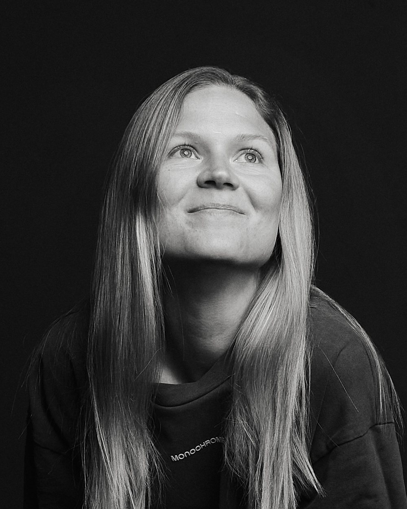
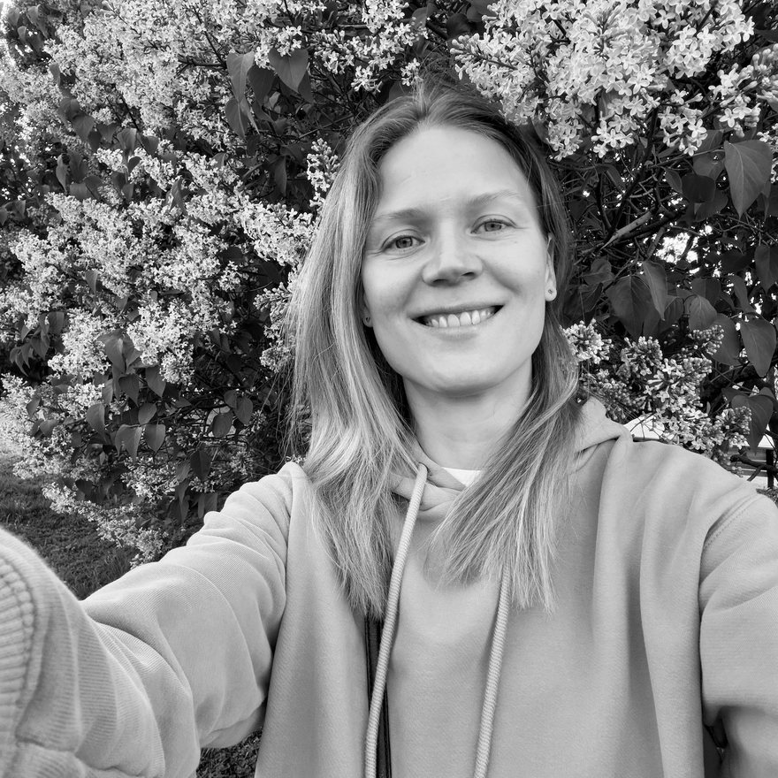
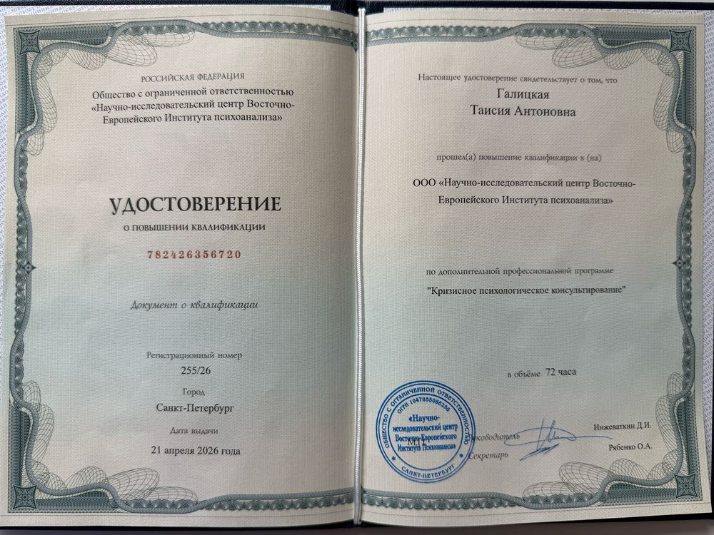
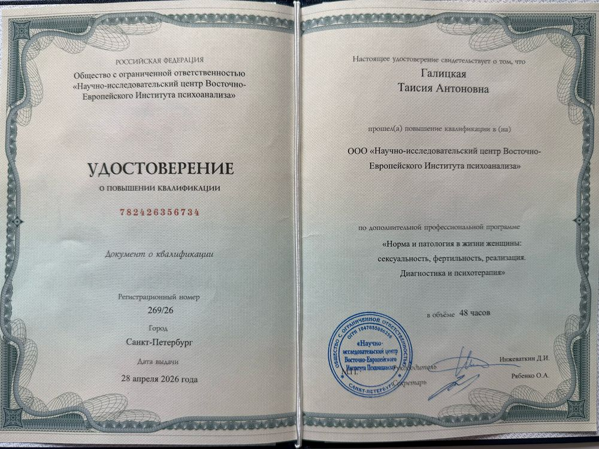
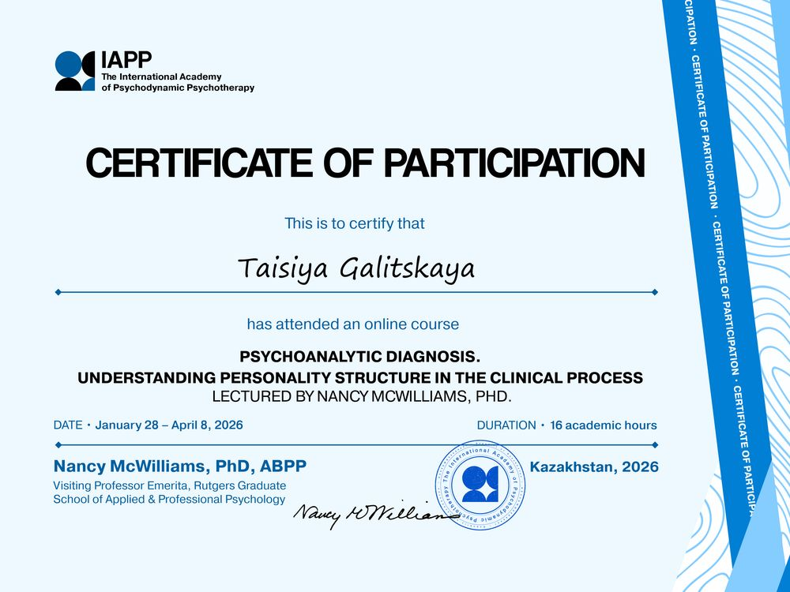
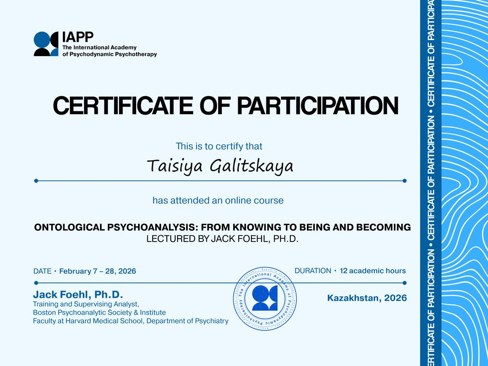

Психолог · психоаналитический подход · работаю онлайн
Таисия Галицкая
Терапия — это совместная работа. Здесь мы бережно и в вашем темпе всматриваемся в то, что вас беспокоит, — пока непонятное не начнёт проясняться. Понимание — не самоцель, а то, что возвращает свободу выбирать иначе.

С чем можно прийти
- когда «что-то не так», но понять, что именно, не получается;
- с прокрастинацией и апатией, когда не выходит жить так, как хотелось бы;
- когда нет контакта с собой и внутренней опоры, а любые решения и выборы даются тяжело;
- с жёстким внутренним критиком и зависимостью от чужого одобрения, и когда сравнение себя с другими выматывает;
- когда всё уходит на заботу о других, а как по-настоящему позаботиться о себе — непонятно;
- с тревогой и сложными чувствами, которые накрывают и выбивают опоры;
- с проживанием переходных периодов и утрат;
- с кризисом в отношениях (в том числе с изменой) или в родительстве;
- когда долго не получается зачать, а врачи не находят причин (психогенное бесплодие);
- и с «пока не понимаю свой запрос, но чувствую, что мне надо» — тоже можно.
Мой профессиональный фокус — проживание кризисов, партнёрские отношения, поиск идентичности, отношения с телом и психогенное бесплодие.
Как я работаю
Я работаю в психоаналитическом подходе. Это значит, что мы смотрим не только на симптом — тревогу, ступор, повторяющийся сценарий в отношениях, — но и на то, что стоит за ним. Часто проблема, с которой человек приходит, оказывается следствием более раннего опыта взаимоотношений со значимыми людьми, и работа с этим опытом и даёт настоящее изменение.
Это не быстрые техники и не готовые советы. Это разговор и активное слушание, в котором постепенно проясняется действительно значимое.
Терапия — не всегда о глубокой трансформации. При сильной тревоге или проживании травмы иногда важнее другое — удержаться на ногах. Тогда мы работаем в поддерживающем формате: бережно, без погружения вглубь, опираясь на то, что помогает выстоять здесь и сейчас.
Есть темы, с которыми я не работаю, — химические зависимости, расстройства пищевого поведения и состояния, требующие психиатрического сопровождения. Это вопрос профессиональных границ: здесь нужна отдельная специализация.
Этический кодекс не позволяет мне работать с родственниками, друзьями и близкими знакомыми. Если мы с вами в таких отношениях, вы можете рекомендовать меня другим людям.
Работаю только со взрослыми.

Обо мне
Меня зовут Таисия. Я из Петербурга, выросла в многодетной семье. Сейчас я сама мама двоих детей. Моё первое образование (СПбГУ) связано с творчеством, и долгие годы я работала с изображениями и текстами. Читать и писать для меня по-прежнему — основной способ думать и понимать. Психологию я выбрала вторым образованием (ВЕИП) и осознанно: сюда я пришла через собственный опыт.
Темы, с которыми я работаю, не случайны. Большая семья со своими сложностями, взаимоотношения с сёстрами и братьями, материнство, болезненный развод и новый брак, поиск себя в новой профессии в зрелом возрасте — через всё это я прошла сама.
С 2021 года я в регулярной личной терапии. Я знаю, каково это — садиться напротив другого человека со своим самым уязвимым.
Я также пишу о психологии — канал «Достаточно хорошая».Образование и подготовка
Базовое образование
- Второе высшее по психоанализу — Восточно-Европейский институт психоанализа (ВЕИП), дипломный год.
Повышение квалификации (ВЕИП)
- «Кризисное психологическое консультирование» — 72 часа, 2026.
- «Норма и патология в жизни женщины: сексуальность, фертильность, реализация. Диагностика и психотерапия» — 48 часов, 2026.
Учусь сейчас
- Несколько программ в МАПП (IAPP), в том числе курс «Гендер, сексуальность и эротическое в психоанализе» с зарубежными аналитиками.
- Курс «Тревога, зависть, стыд и процесс психического развития» Кристофера Боновица.
- Курс «Терапия горя: трёхчастная модель реконструкции смыслов при проживании утраты» Роберта Нимайера.
- Каждый будний день участвую в ридинг-группе по чтению Фрейда и Кляйн.
Международные курсы и интенсивы
- «Психоаналитическая диагностика. Понимание структуры личности в клиническом процессе» — курс Нэнси Мак-Вильямс (IAPP).
- «Онтологический психоанализ: от знания к бытию и становлению» — курс Джека Фёля (IAPP).
- «Нейропсихоанализ и его клинические последствия» — вебинар Марка Солмса (NEWPSY).
- «Введение в методы и подходы психотерапии» — обзорный курс по 40+ направлениям (NEWPSY).
Дипломы и сертификаты




Формат и стоимость
- Формат
- онлайн — Zoom или Телемост 1–2 раза в неделю
- Длительность сессии
- 50 минут
- Стоимость
- 2500 ₽ за сессию цена действует до конца лета
Как начать
Первый шаг — написать мне в Телеграм или на почту, и мы договоримся об удобном времени. На первой встрече вы расскажете, что вас привело (или что пока не получается сформулировать), а я объясню, как устроена терапия и чем я могу быть полезна. Это знакомство ни к чему не обязывает: нам обоим важно почувствовать, подходим ли мы друг другу.
А если я не могу сформулировать запрос?
Это нормально и встречается часто. «Чувствую, что мне надо, но не понимаю что» — уже достаточная причина прийти. Разбираться в запросе — часть работы, а не условие для её начала.
А вдруг мне не подойдёт?
Так бывает, и это не провал. Контакт с терапевтом — половина дела. Если почувствуете, что не ваше, — скажите прямо; при необходимости помогу сориентироваться, к кому обратиться.
Это конфиденциально?
Да. Всё, что происходит на сессиях, остаётся между нами. Для большей эффективности в сложных моментах я обращаюсь за супервизией — это профессиональная поддержка терапевта, при которой обсуждается сама работа, а не вы: анонимно и без узнаваемых подробностей.
Как часто нужно встречаться?
Обычно один-два раза в неделю — регулярность даёт работе устойчивость. Конкретный ритм обсудим на первой встрече, исходя из вашего запроса и возможностей.
Связаться со мной
Напишите любым удобным способом — обсудим время первой встречи.
Меня также можно читать